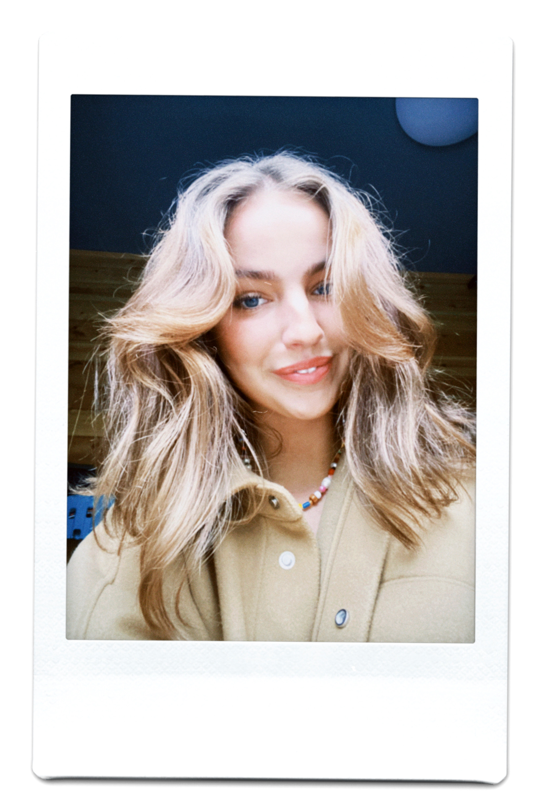

Om Mig

Mit navn er Olivia Engedal Bothe, jeg er 21 år og bor i Dyssegård med min familie. Jeg dimitterede fra Gammel Hellerup Gymnasium i sommeren 2020 og er nu studerende på KEA som Multi Medie Designer på 1. semester. Derudover har jeg et studiejob hos Zangenberg Analytics, hvor jeg er Marketing & SoMe support. Jeg har et positivt mindset, er kreativ og pligtopfyldende og er altid frisk på nye udfordringer/opgaver. Derudover gør jeg aldrig tingene halvt, og engagerer mig altid 100% i de opgaver jeg bliver stillet eller sætter mig for.